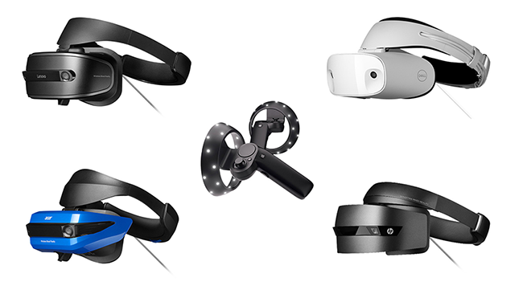

Windows Mixed Reality (WMR) is a Microsoft platform built around the Windows 10 API, allowing applications to render digital content on holographic and immersive display devices.
Holographic devices such as the Microsoft HoloLens allow you to see the physical environment around you while wearing the headset, blending the real world with virtual content.
Windows Mixed Reality immersive headsets feature an opaque display to block out the physical world and surround you in a 360 degree virtual environment.
The HoloLens is a device for running both Augmented Reality and Mixed Reality applications. There are a number of important differences between HoloLens and Windows immersive devices, which developers should consider when creating applications. While HoloLens applications use the same tools and APIs as other Windows Mixed RealityA mixed reality platform developed by Microsoft, built around the API of Windows 10. More info
See in Glossary applications, their strength lies in allowing you to interact with the real world environment in unique ways.
HoloLens renders 3D virtual objects in your device’s view, creating the illusion that those objects are in the surrounding real-world environment. The user can interact with these objects using gestures, voice commands and gaze. The objects can also interact with real-world surfaces in your physical environment. You can attach audio, animations and other componentsA functional part of a GameObject. A GameObject can contain any number of components. Unity has many built-in components, and you can create your own by writing scripts that inherit from MonoBehaviour. More info
See in Glossary to holograms, as with any other GameObjectThe fundamental object in Unity scenes, which can represent characters, props, scenery, cameras, waypoints, and more. A GameObject’s functionality is defined by the Components attached to it. More info
See in Glossary in Unity.
More information on holograms is available on the Microsoft developer website.
Windows Mixed Reality (WMR) immersive headsets feature an opaque display to block out the physical world and surround you in a 360 degree virtual environment.
Many Virtual RealityA system that immerses users in an artificial 3D world of realistic images and sounds, using a headset and motion tracking. More info
See in Glossary devices, such as the HTC Vive or OculusA VR platform for making applications for Rift and mobile VR devices. More info
See in Glossary Rift, use sensors built into headsets and camerasA component which creates an image of a particular viewpoint in your scene. The output is either drawn to the screen or captured as a texture. More info
See in Glossary facing towards these to track user movements. This is known as outside-in tracking. The majority of WMR immersive headsets use inside-out tracking: Instead of using external cameras in the environment, inside-out tracking devices use outward-facing cameras built into the headset for positional tracking. Windows Holographic devices such as the HoloLens also use inside-out tracking.
The table below presents the main features of Holographic and immersive Windows Mixed Reality devices.
| Feature | Holographic device | Immersive device |
|---|---|---|
| Display | See-through display that allows you to see the physical environment while wearing the headset | Opaque display that blocks out the physical environment while wearing the headset |
| Tracking Scale | World scale | Stationary or Room scale |
| Tracking type | Inside-out | Inside-out |
| Headsets |
 |
The table below lists the important differences between Hololens and immersive devices.
| Difference | Details |
|---|---|
| Holograms do not replace reality | Unlike an immersive 3D environment, holograms are additive; the device draws them over the real world. HoloLens applications augment and can interact with your physical environment. |
| Input paradigms are different | The primary forms of input for HoloLens are: - Gaze (where the user is looking) - GestureA HoloLens input type that uses hand signals to signify commands to the system. More info See in Glossary (hand signals that the device interprets as commands) - Voice (spoken commands). This is a significant shift from conventional input methods. |
| The HoloLens device is power sensitive | HoloLens is a mobile device, so applications need to be responsible with power usage, just like a phone app. Ensuring you disable features and optimize for CPU utilization is more important than on other platforms. |
| Photo capture and video capture | Only HoloLens allows the user to capture pictures and videos from the device’s camera. Immersive Windows Mixed Reality headsets don’t allow the user to access the cameras on the device to capture photos or videos. Using the photo and video capture APIs will allow you to capture from a webcam connected to your PC. |
| Spatial MappingThe process of mapping real-world surfaces into the virtual world. More info See in Glossary |
HoloLens supports spatial mapping components and APIs. Windows Mixed Reality immersive headsets do not support these. |
| Tracking Space | Immersive devices work best for standing-scale (stationary) or room-scale experiences, while the HoloLens works at world scale. Users are not limited to a single location, and can walk far beyond their initial location. Applications need to deal with dynamic reference frames and world-locked content. |
For information about input control mapping differences, see Windows Mixed Reality Input.
You can also find additional details in Microsoft’s Mixed Reality documentation.
2018–03–27 Page published with editorial review
New content added for XR API changes in 2017.3
Did you find this page useful? Please give it a rating: